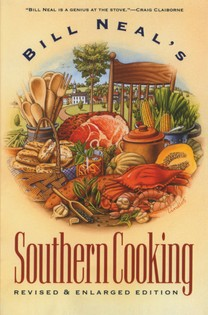

2.1 Yummy Butternut Squash & Pumpkin Soup
Sara Helms Cahan

2.1.1 Pitch
We make this on cold snowy nights in the heart of winter - a savory and rich soup, a bit of pepper heat, elegant enough for dinner parties. Originally from Bill Neal’s Southern Cooking.
2.1.2 Materials
- 1 ½ lbs fresh peeled butternut squash or pumpkin, cubed, or 1 lb canned pumpkin
- 3 Tbps butter
- ½ cup chopped scallions, white parts only
- ½ cup chopped celery
- ½ cup chopped carrots
- 1 chopped garlic clove
- 3 cups chicken or vegetable stock
- 1 cup canned Italian tomatoes, chopped, with juice
- ¼ tsp dried red pepper flakes
- ¼ tsp white pepper
- ⅛ tsp nutmeg
- 2 cups half-and-half
- Green tops of scallions, sliced thin for garnish
2.1.3 Methods
- Melt the butter in a saucepan and saute the scallions, celery and carrots gently.
- Add the garlic, stir briefly, and add the stock, tomatoes, and squash/pumpkin.
- Season with red pepper flakes, white pepper, and nutmeg.
- Cook slowly for 1 hour.
- Remove from heat, let cool slightly, and puree until texture is very smooth.
- Before serving, add half-and-half, reheat gently.
- Serve with green scallion sprinkled on top.